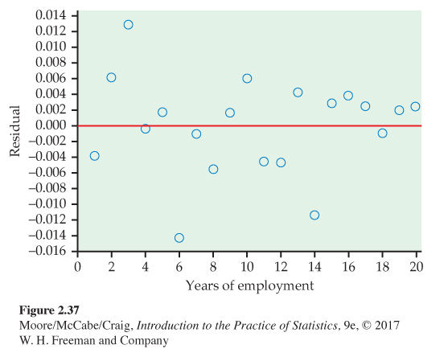

CHAPTER 2 EXERCISES
154
Question 2.144
2.144 Dwelling permits and sales for 23 countries. The Organisation for Economic Co-operation and Development collects data on main economic indicators (MEIs) for many countries. Each variable is recorded as an index with the year 2000 serving as a base year. This means that the variable for each year is reported as a ratio of the value for the year divided by the value for 2000. Use of indices in this way makes it easier to compare values for different countries. Table 2.3 gives the values of three MEIs for 23 countries.31
MEIS
(a) Make a scatterplot with sales as the response variable and permits issued for new dwellings as the explanatory variable. Describe the relationship. Are there any outliers or influential observations?
(b) Find the least-squares regression line and add it to your plot.
(c) Interpret the slope of the line in the context of this exercise.
(d) Interpret the intercept of the line in the context of this exercise. Explain whether or not this interpretation is useful in explaining the relationship between these two variables.
(e) What is the predicted value of sales for a country that has an index of 224 for dwelling permits?
Table : TABLE 2.3 Dwelling Permits, Sales, and Production for 21 CountriesCountry Dwelling permits Sales Production Australia 116 137 109 Belgium 125 105 112 Canada 224 122 101 Czech Republic 178 134 162 Denmark 121 126 109 Finland 105 136 125 France 145 121 104 Germany 54 100 119 Greece 117 136 102 Hungary 109 140 155 Ireland 92 123 144 Japan 86 99 109 Korea 158 110 156 Luxembourg 145 161 118 Netherlands 160 107 109 New Zealand 127 139 112 Norway 125 136 94 Poland 163 139 159 Portugal 53 112 105 Spain 122 123 108 Sweden 180 142 116 (f) Canada has an index of 224 for dwelling permits. Find the residual for this country.
(g) What percent of the variation in sales is explained by dwelling permits?
Question 2.145
2.145 Dwelling permits and production. Refer to the previous exercise.
MEIS
(a) Make a scatterplot with production as the response variable and permits issued for new dwellings as the explanatory variable. Describe the relationship. Are there any outliers or influential observations?
(b) Find the least-squares regression line and add it to your plot.
(c) Interpret the slope of the line in the context of this exercise.
(d) Interpret the intercept of the line in the context of this exercise. Explain whether or not this interpretation is useful in explaining the relationship between these two variables.
(e) What is the predicted value of production for a country that has an index of 224 for dwelling permits?
(f) Canada has an index of 224 for dwelling permits. Find the residual for this country.
(g) What percent of the variation in production is explained by dwelling permits? How does this value compare with the value that you found in the previous exercise for the percent of variation in sales that is explained by building permits?
Question 2.146
2.146 Sales and production. Refer to the previous two exercises.
MEIS
(a) Make a scatterplot with sales as the response variable and production as the explanatory variable. Describe the relationship. Are there any outliers or influential observations?
(b) Find the least-squares regression line and add it to your plot.
(c) Interpret the slope of the line in the context of this exercise.
(d) Interpret the intercept of the line in the context of this exercise. Explain whether or not this interpretation is useful in explaining the relationship between these two variables.
(e) What is the predicted value of sales for a country that has an index of 109 for production?
(f) The Netherlands has an index of 109 for production. Find the residual for this country.
(g) What percent of the variation in sales is explained by production? How does this value compare with the percents of variation that you calculated in the two previous exercises?
155
Question 2.147
2.147 Population in Canadian provinces and territories. Statistics Canada provides a great deal of demographic data organized in different ways.32 Figure 2.32 gives the percent of the population aged 65 years and older and the percent aged 15 years and younger for each of the 13 Canadian provinces and territories. Figure 2.33 is a scatterplot of the percent of the population over 65 versus the percent under 15.
CANADAP
(a) Write a short paragraph explaining what the plot tells you about these two demographic groups in the 13 Canadian provinces and territories.
(b) Find the correlation between the percent of the population over 65 and the percent under 15. Does the correlation give a good numerical summary of the strength of this relationship? Explain your answer.
Question 2.148
2.148 Nunavut. Refer to the previous exercise and Figures 2.32 and 2.33.
CANADAP
(a) Do you think that Nunavut is an outlier?
(b) Make a residual plot for these data. Comment on the size of the residual for Nunavut. Use this information to expand on your answer to part (a).
(c) Find the value of the correlation without Nunavut. How does this compare with the value you computed in part (b) of the previous exercise?
(d) Write a short paragraph about Nunavut based on what you have found in this exercise and the previous one.
Question 2.149
2.149 Compare the provinces with the territories. Refer to the previous exercise. The three Canadian territories are the Northwest Territories, Nunavut, and the Yukon Territories. All the other entries in Figure 2.32 are provinces.
CANADAP
(a) Generate a scatterplot of the Canadian demographic data similar to Figure 2.33 but with the points labeled “P” for provinces and “T” for territories.
(b) Use your new scatterplot to write a new summary of the demographics for the 13 Canadian provinces and territories.
Question 2.150
 2.150 Records for men and women in the 10K. Table 2.4 shows the progress of world record times (in seconds) for the 10,000-meter run for both men and women.33
2.150 Records for men and women in the 10K. Table 2.4 shows the progress of world record times (in seconds) for the 10,000-meter run for both men and women.33
TENK
| Men | Women | ||||
|---|---|---|---|---|---|
| Record year |
Time (seconds) |
Record year |
Time (seconds) |
Record year |
Time (seconds) |
| 1912 | 1880.8 | 1963 | 1695.6 | 1967 | 2286.4 |
| 1921 | 1840.2 | 1965 | 1659.3 | 1970 | 2130.5 |
| 1924 | 1835.4 | 1972 | 1658.4 | 1975 | 2100.4 |
| 1924 | 1823.2 | 1973 | 1650.8 | 1975 | 2041.4 |
| 1924 | 1806.2 | 1977 | 1650.5 | 1977 | 1995.1 |
| 1937 | 1805.6 | 1978 | 1642.4 | 1979 | 1972.5 |
| 1938 | 1802.0 | 1984 | 1633.8 | 1981 | 1950.8 |
| 1939 | 1792.6 | 1989 | 1628.2 | 1981 | 1937.2 |
| 1944 | 1775.4 | 1993 | 1627.9 | 1982 | 1895.3 |
| 1949 | 1768.2 | 1993 | 1618.4 | 1983 | 1895.0 |
| 1949 | 1767.2 | 1994 | 1612.2 | 1983 | 1887.6 |
| 1949 | 1761.2 | 1995 | 1603.5 | 1984 | 1873.8 |
| 1950 | 1742.6 | 1996 | 1598.1 | 1985 | 1859.4 |
| 1953 | 1741.6 | 1997 | 1591.3 | 1986 | 1813.7 |
| 1954 | 1734.2 | 1997 | 1587.8 | 1993 | 1771.8 |
| 1956 | 1722.8 | 1998 | 1582.7 | ||
| 1956 | 1710.4 | 2004 | 1580.3 | ||
| 1960 | 1698.8 | 2005 | 1577.3 | ||
| 1962 | 1698.2 | ||||
(a) Make a scatterplot of world record time against year, using separate symbols for men and women. Describe the pattern for each sex. Then compare the progress of men and women.
(b) Women began running this long distance later than men, so we might expect their improvement to be more rapid. Moreover, it is often said that men have little advantage over women in distance running as opposed to sprints, where muscular strength plays a greater role. Do the data appear to support these claims?
156
Question 2.151
2.151 Remote deposit capture. The Federal Reserve has called remote deposit capture (RDC) “the most important development the [U.S.] banking industry has seen in years.” This service allows users to scan checks and to transmit the scanned images to a bank for posting.34 In its annual survey of community banks, the American Bankers Association asked banks whether or not they offered this service.35 Here are the results classified by the asset size (in millions of dollars) of the bank:
RDCSIZE
| Offer RDC | ||
|---|---|---|
| Asset size | Yes | No |
| Under $100 | 63 | 309 |
| $101 to $200 | 59 | 132 |
| $201 or more | 112 | 85 |
Summarize the results of this survey question numerically and graphically. Write a short paragraph explaining the relationship between the size of a bank, measured by assets, and whether or not RDC is offered.
Question 2.152
2.152 How does RDC vary across the country? The survey described in the previous exercise also classified community banks by region. Here is the 6 × 2 table of counts:36
RDCREG
| Offer RDC | ||
|---|---|---|
| Region | Yes | No |
| Northeast | 28 | 38 |
| Southeast | 57 | 61 |
| Central | 53 | 84 |
| Midwest | 63 | 181 |
| Southwest | 27 | 51 |
| West | 61 | 76 |
Summarize the results of this survey question numerically and graphically. Write a short paragraph explaining the relationship between the location of a bank and whether or not RDC is offered.
Question 2.153
2.153 Fields of study for college students. The following table gives the number of students (in thousands) graduating from college with degrees in several fields of study for seven countries:37
FOS
| Field of study | Canada | France | Germany | Italy | Japan | U.K. | U.S. |
|---|---|---|---|---|---|---|---|
| Social sciences, business, law | 64 | 153 | 66 | 125 | 250 | 152 | 878 |
| Science, mathematics, engineering | 35 | 111 | 66 | 80 | 136 | 128 | 355 |
| Arts and humanities | 27 | 74 | 33 | 42 | 123 | 105 | 397 |
| Education | 20 | 45 | 18 | 16 | 39 | 14 | 167 |
| Other | 30 | 289 | 35 | 58 | 97 | 76 | 272 |
(a) Calculate the marginal totals and add them to the table.
(b) Find the marginal distribution of country and give a graphical display of the distribution.
(c) Do the same for the marginal distribution of field of study.
157
Question 2.154
2.154 Fields of study by country for college students. In the previous exercise you examined data on fields of study for graduating college students from seven countries.
FOS
(a) Find the seven conditional distributions giving the distribution of graduates in the different fields of study for each country.
(b) Display the conditional distributions graphically.
(c) Write a paragraph summarizing the relationship between field of study and country.
Question 2.155
2.155 Graduation rates. One of the factors used to evaluate undergraduate programs is the proportion of incoming students who graduate. This quantity, called the graduation rate, can be predicted by other variables such as the SAT or ACT scores and the high school records of the incoming students. One of the components that U.S. News & World Report uses when evaluating colleges is the difference between the actual graduation rate and the rate predicted by a regression equation.38 In this chapter, we call this quantity the residual. Explain why the residual is a better measure to evaluate college graduation rates than the raw graduation rate.
Question 2.156
2.156 Salaries and raises. For this exercise, we consider a hypothetical employee who starts working in Year 1 with a salary of $50,000. Each year her salary increases by approximately 5%. By Year 20, she is earning $126,000. The following table gives her salary for each year (in thousands of dollars):
RAISES
| Year | Salary | Year | Salary | Year | Salary | Year | Salary |
|---|---|---|---|---|---|---|---|
| 1 | 50 | 6 | 63 | 11 | 81 | 16 | 104 |
| 2 | 53 | 7 | 67 | 12 | 85 | 17 | 109 |
| 3 | 56 | 8 | 70 | 13 | 90 | 18 | 114 |
| 4 | 58 | 9 | 74 | 14 | 93 | 19 | 120 |
| 5 | 61 | 10 | 78 | 15 | 99 | 20 | 126 |
(a) Figure 2.34 is a scatterplot of salary versus year, with the least-squares regression line. Describe the relationship between salary and year for this person.
(b) The value of r2 for these data is 0.9832. What percent of the variation in salary is explained by year? Would you say that this is an indication of a strong linear relationship? Explain your answer.
Question 2.157
2.157 Look at the residuals. Refer to the previous exercise. Figure 2.35 is a plot of the residuals versus year.
RAISES
(a) Interpret the residual plot.
(b) Explain how this plot highlights the deviations from the least-squares regression line that you can see in Figure 2.34.
Question 2.158
2.158 Try logs. Refer to the previous two exercises. Figure 2.36 is a scatterplot with the least-squares regression line for log salary versus year. For this model, r2 = 0.9995.
RAISES
(a) Compare this plot with Figure 2.34. Write a short summary of the similarities and the differences.
(b) Figure 2.37 is a plot of the residuals for the model using year to predict log salary. Compare this plot with Figure 2.35 and summarize your findings.
158
Question 2.159
2.159 Make some predictions. The individual whose salary we have been studying wants to do some financial planning. Specifically, she would like to predict her salary five years into the future, that is, for Year 25. She is willing to assume that her employment situation will be stable for the next five years and that it will be similar to the last 20 years.
RAISES
(a) Predict her salary for Year 25 using the least-squares regression equation constructed to predict salary from year.
(b) Predict her salary for Year 25 using the least-squares regression equation constructed to predict log salary from year. Note that you will need to take the predicted log salary and convert this value back to the predicted salary. Many calculators have a function that will perform this operation.
Figure 2.37: Figure 2.37 Plot of residuals, based on log salary, versus year for an individual who receives approximately a 5% raise each year for 20 years, Exercise 2.158.(c) Which prediction do you prefer? Explain your answer.
(d) Someone looking at the numerical summaries and not the plots for these analyses says that because both models have very high values of r2, they should perform equally well in doing this prediction. Write a response to this comment.
(e) Discuss the value of graphical summaries and the problems of extrapolation using what you have learned in studying these salary data.
Question 2.160
2.160 Faculty salaries. Here are the salaries for a sample of professors in a mathematics department at a large midwestern university for the academic years 2014–2015 and 2015–2016.
FACULTY
| 2014–2015 | 2015–2016 | 2014–2015 | 2015–2016 |
|---|---|---|---|
| salary ($) | salary ($) | salary ($) | salary ($) |
| 145,700 | 147,700 | 136,650 | 138,650 |
| 112,700 | 114,660 | 132,160 | 134,150 |
| 109,200 | 111,400 | 74,290 | 76,590 |
| 98,800 | 101,900 | 74,500 | 77,000 |
| 112,000 | 113,000 | 83,000 | 85,400 |
| 111,790 | 113,800 | 141,850 | 143,830 |
| 103,500 | 105,700 | 122,500 | 124,510 |
| 149,000 | 150,900 | 115,100 | 117,100 |
(a) Construct a scatterplot with the 2015–2016 salaries on the vertical axis and the 2014–2015 salaries on the horizontal axis.
(b) Comment on the form, direction, and strength of the relationship in your scatterplot.
(c) What proportion of the variation in 2015–2016 salaries is explained by 2014–2015 salaries?
159
Question 2.161
2.161 Find the line and examine the residuals. Refer to the previous exercise.
FACULTY
(a) Find the least-squares regression line for predicting 2015–2016 salaries from 2014–2015 salaries.
(b) Analyze the residuals, paying attention to any outliers or influential observations. Write a summary of your findings.
Question 2.162
2.162 Bigger raises for those earning less. Refer to the previous two exercises. The 2014–2015 salaries do an excellent job of predicting the 2015–2016 salaries. Is there anything more that we can learn from these data? In this department, there is a tradition of giving higher-than-average percent raises to those whose salaries are lower. Let’s see if we can find evidence to support this idea in the data.
FACULTY
(a) Compute the percent raise for each faculty member. Take the difference between the 2015–2016 salary and the 2014–2015 salary, divide by the 2014–2015 salary, and then multiply by 100. Make a scatterplot with raise as the response variable and the 2014–2015 salary as the explanatory variable. Describe the relationship that you see in your plot.
(b) Find the least-squares regression line and add it to your plot.
(c) Analyze the residuals. Are there any outliers or influential cases? Make a graphical display and include this in a short summary of your conclusions.
(d) Is there evidence in the data to support the idea that greater percent raises are given to those with lower salaries? Include numerical and graphical summaries to support your conclusion.
Question 2.163
2.163 Firefighters and fire damage. Someone says, “There is a strong positive correlation between the number of firefighters at a fire and the amount of damage the fire does. So sending lots of firefighters just causes more damage.” Explain why this reasoning is wrong.
Question 2.164
2.164 Predicting text pages. The editor of a statistics text would like to plan for the next edition. A key variable is the number of pages that will be in the final version. Text files are prepared by the authors using a word processor called LaTeX, and separate files contain figures and tables. For the previous edition of the text, the number of pages in the LaTeX files can easily be determined, as well as the number of pages in the final version of the text. Here are the data:
TEXTP
| Chapter | 1 | 2 | 3 | 4 | 5 | 6 | 7 | 8 | 9 | 10 | 11 | 12 | 13 |
| LaTeX pages | 77 | 73 | 59 | 80 | 45 | 66 | 81 | 45 | 47 | 43 | 31 | 46 | 26 |
| Text pages | 99 | 89 | 61 | 82 | 47 | 68 | 87 | 45 | 53 | 50 | 36 | 52 | 19 |
(a) Plot the data and describe the overall pattern.
(b) Find the equation of the least-squares regression line and add the line to your plot.
(c) Find the predicted number of pages for the next edition if the number of LaTeX pages is 62.
(d) Write a short report for the editor explaining to her how you constructed the regression equation and how she could use it to estimate the number of pages in the next edition of the text.
Question 2.165
 2.165 Plywood strength. How strong is a building material such as plywood? To be specific, support a 24-inch by 2-inch strip of plywood at both ends and apply force in the middle until the strip breaks. The modulus of rupture (MOR) is the force needed to break the strip. We would like to be able to predict MOR without actually breaking the wood. The modulus of elasticity (MOE) is found by bending the wood without breaking it. Both MOE and MOR are measured in pounds per square inch. Here are data for 32 specimens of the same type of plywood:39
2.165 Plywood strength. How strong is a building material such as plywood? To be specific, support a 24-inch by 2-inch strip of plywood at both ends and apply force in the middle until the strip breaks. The modulus of rupture (MOR) is the force needed to break the strip. We would like to be able to predict MOR without actually breaking the wood. The modulus of elasticity (MOE) is found by bending the wood without breaking it. Both MOE and MOR are measured in pounds per square inch. Here are data for 32 specimens of the same type of plywood:39
MOEMOR
| MOE | MOR | MOE | MOR | MOE | MOR | MOE | MOR |
|---|---|---|---|---|---|---|---|
| 2,005,400 | 11,591 | 2,181,910 | 12,702 | 1,774,850 | 10,541 | 1,747,010 | 11,794 |
| 1,166,360 | 8,542 | 1,559,700 | 11,209 | 1,457,020 | 10,314 | 1,791,150 | 11,413 |
| 1,842,180 | 12,750 | 2,372,660 | 12,799 | 1,959,590 | 11,983 | 2,535,170 | 13,920 |
| 2,088,370 | 14,512 | 1,580,930 | 12,062 | 1,720,930 | 10,232 | 1,355,720 | 9,286 |
| 1,615,070 | 9,244 | 1,879,900 | 11,357 | 1,355,960 | 8,395 | 1,646,010 | 8,814 |
| 1,938,440 | 11,904 | 1,594,750 | 8,889 | 1,411,210 | 10,654 | 1,472,310 | 6,326 |
| 2,047,700 | 11,208 | 1,558,770 | 11,565 | 1,842,630 | 10,223 | 1,488,440 | 9,214 |
| 2,037,520 | 12,004 | 2,212,310 | 15,317 | 1,984,690 | 13,499 | 2,349,090 | 13,645 |
Can we use MOE to predict MOR accurately? Use the data to write a discussion of this question.
Question 2.166
2.166 Distribution of the residuals. Some statistical methods require that the residuals from a regression line have a Normal distribution. The residuals for the nonexercise activity example are given in Exercise 2.93 (page 125). Is their distribution close to Normal? Make a Normal quantile plot to find out.
FIDGET
Question 2.167
2.167 An example of Simpson’s paradox. Mountain View University has professional schools in business and law. Here is a three-way table of applicants to these professional schools, categorized by sex, school, and admission decision:40
ADMITS
| Business | Law | ||||
|---|---|---|---|---|---|
| Admit | Admit | ||||
| Sex | Yes | No | Sex | Yes | No |
| Male | 400 | 200 | Male | 90 | 110 |
| Female | 200 | 100 | Female | 200 | 200 |
(a) Make a two-way table of sex by admission decision for the combined professional schools by summing entries in the three-way table.
(b) From your two-way table, compute separately the percents of male and female applicants admitted. Male applicants are admitted to Mountain View’s professional schools at a higher rate than female applicants.
(c) Now compute separately the percents of male and female applicants admitted by the business school and by the law school.
(d) Explain carefully, as if speaking to a skeptical reporter, how it can happen that Mountain View appears to favor males when this is not true within each of the professional schools.
160
Question 2.168
2.168 Simpson’s paradox and regression. Simpson’s paradox occurs when a relationship between variables within groups of observations reverses when all of the data are combined. The phenomenon is usually discussed in terms of categorical variables, but it also occurs in other settings. Here is an example:
SIMREG
| y | x | Group | y | x | Group |
|---|---|---|---|---|---|
| 10.1 | 1 | 1 | 18.3 | 6 | 2 |
| 8.9 | 2 | 1 | 17.1 | 7 | 2 |
| 8.0 | 3 | 1 | 16.2 | 8 | 2 |
| 6.9 | 4 | 1 | 15.1 | 9 | 2 |
| 6.1 | 5 | 1 | 14.3 | 10 | 2 |
(a) Make a scatterplot of the data for Group 1. Find the least-squares regression line and add it to your plot. Describe the relationship between y and x for Group 1.
(b) Do the same for Group 2.
(c) Make a scatterplot using all 10 observations. Find the least-squares line and add it to your plot.
(d) Make a plot with all of the data using different symbols for the two groups. Include the three regression lines on the plot. Write a paragraph about Simpson’s paradox for regression using this graphical display to illustrate your description.
Question 2.169
 2.169 Class size and class level. A university classifies its classes as either “small” (fewer than 40 students) or “large.” A dean sees that 62% of Department A’s classes are small, while Department B has only 40% small classes. She wonders if she should cut Department A’s budget and insist on larger classes. Department A responds to the dean by pointing out that classes for third- and fourth-year students tend to be smaller than classes for first- and second-year students. The following three-way table gives the counts of classes by department, size, and student audience. Write a short report for the dean that summarizes these data. Start by computing the percents of small classes in the two departments and include other numerical and graphical comparisons as needed. Here are the numbers of classes to be analyzed:
2.169 Class size and class level. A university classifies its classes as either “small” (fewer than 40 students) or “large.” A dean sees that 62% of Department A’s classes are small, while Department B has only 40% small classes. She wonders if she should cut Department A’s budget and insist on larger classes. Department A responds to the dean by pointing out that classes for third- and fourth-year students tend to be smaller than classes for first- and second-year students. The following three-way table gives the counts of classes by department, size, and student audience. Write a short report for the dean that summarizes these data. Start by computing the percents of small classes in the two departments and include other numerical and graphical comparisons as needed. Here are the numbers of classes to be analyzed:
CSIZE
| Department A | Department B | |||||
|---|---|---|---|---|---|---|
| Year | Large | Small | Total | Large | Small | Total |
| First | 2 | 0 | 2 | 18 | 2 | 20 |
| Second | 9 | 1 | 10 | 40 | 10 | 50 |
| Third | 5 | 15 | 20 | 4 | 16 | 20 |
| Fourth | 4 | 16 | 20 | 2 | 14 | 16 |
Question 2.170
2.170 More smokers live at least 20 more years! You can see the headlines: “More smokers than nonsmokers live at least 20 more years after being contacted for study!” A medical study contacted randomly chosen people in a district in England. Here are data on the 1314 women contacted who were either current smokers or who had never smoked. The tables classify these women by their smoking status and age at the time of the survey and whether they were still alive 20 years later.41
SMOKERS
| Age 18 to 44 | Age 45 to 64 | Age 65+ | ||||
|---|---|---|---|---|---|---|
| Smoker | Not | Smoker | Not | Smoker | Not | |
| Dead | 19 | 13 | 78 | 52 | 42 | 165 |
| Alive | 269 | 327 | 167 | 147 | 7 | 28 |
(a) From these data, make a two-way table of smoking (yes or no) by dead or alive. What percent of the smokers stayed alive for 20 years? What percent of the nonsmokers survived? It seems surprising that a higher percent of smokers stayed alive.
(b) The age of the women at the time of the study is a lurking variable. Show that within each of the three age groups in the data, a higher percent of nonsmokers remained alive 20 years later. This is another example of Simpson’s paradox.
(c) The study authors give this explanation: “Few of the older women (over 65 at the original survey) were smokers, but many of them had died by the time of follow-up.” Compare the percent of smokers in the three age groups to verify the explanation.
161
Question 2.171
2.171 Recycled product quality. Recycling is supposed to save resources. Some people think recycled products are lower in quality than other products, a fact that makes recycling less practical. People who actually use a recycled product may have different opinions from those who don’t use it. Here are data on attitudes toward coffee filters made of recycled paper among people who do and don’t buy these filters:42
RECYCLE
| Think the quality of the recycled product is: |
|||
|---|---|---|---|
| Higher | The same | Lower | |
| Buyers | 20 | 7 | 9 |
| Nonbuyers | 29 | 25 | 43 |
(a) Find the marginal distribution of opinion about quality. Assuming that these people represent all users of coffee filters, what does this distribution tell us?
(b) How do the opinions of buyers and nonbuyers differ? Use conditional distributions as a basis for your answer. Include a mosaic plot if you have access to the needed software. Can you conclude that using recycled filters causes more favorable opinions? If so, giving away samples might increase sales.
Question 2.172
2.172 Survival and sex on the Titanic. In Exercise 2.122, you examined the relationship between survival and class on the Titanic. The data file TITANIC contains data on the sex of the Titanic passengers. Examine the relationship between survival and sex and write a short summary of your findings.
TITANIC
Question 2.173
2.173 Survival, class, and sex on the Titanic. Refer to the previous exercise and Exercise 2.122 (page 146). When we looked at survival and class, we ignored sex. When we looked at survival and sex, we ignored class. Are we missing something interesting about these data when we choose this approach to the analysis? Here is one way to answer this question.
TITANIC
(a) Create two separate two-way tables. One for survival and class for the women and another for survival and class for the men.
(b) Perform an analysis of the relationship between survival and class for the women. Summarize your findings.
(c) Perform an analysis of the relationship between survival and class for the men. Summarize your findings.
(d) Compare the analyses that you performed in parts (b) and (c). Write a short report on the relationship between survival and the two explanatory variables, class and sex.
Question 2.174
 2.174 Blueberries and anthocyanins. Refer to Exercises 1.165 and 1.166 (page 77). Figure 2.38 gives JMP output for examining the relationship between Antho2 and Antho1. Use this output to write a summary of this relationship using the methods and ideas that you learned in this chapter.
2.174 Blueberries and anthocyanins. Refer to Exercises 1.165 and 1.166 (page 77). Figure 2.38 gives JMP output for examining the relationship between Antho2 and Antho1. Use this output to write a summary of this relationship using the methods and ideas that you learned in this chapter.
BERRIES
Question 2.175
2.175 Averaged date for blueberries and anthocyanins. Refer to the previous exercise where you examined the relationship between Antho2 and Antho1. The variables Antho2M and Antho1M were computed by averaging Antho2 and Antho1 for values of Antho1 in the intervals (0, 0.5), [0.5, 1.0), [1.0, 1.5), [1.5, 2.0), [2.0, 2.5), [2.5, 3.0), and [3.0, 3.5). Analyze the relationship between Antho2M and Antho1M, and compare your results that you found in the previous exercise using Antho2 and Antho1. Summarize what the comparison tells you about relationships with averaged data.
BERRIEM
Question 2.176
 2.176 Restricting the range for blueberries and anthocyanins. Refer to Exercise 2.174 where you examined the relationship between Antho2 and Antho1. The data file BERRIER was created from the data file BERRIES by excluding cases with values of Antho1 that are less than 1.5 and cases with values of Antho1 that are greater than 3. Analyze the relationship between Antho2 and Antho1 for this restricted range data set, and compare your results that you found in Exercise 2.174 for the complete data set. Summarize what the comparison tells you about relationships with a restricted range.
2.176 Restricting the range for blueberries and anthocyanins. Refer to Exercise 2.174 where you examined the relationship between Antho2 and Antho1. The data file BERRIER was created from the data file BERRIES by excluding cases with values of Antho1 that are less than 1.5 and cases with values of Antho1 that are greater than 3. Analyze the relationship between Antho2 and Antho1 for this restricted range data set, and compare your results that you found in Exercise 2.174 for the complete data set. Summarize what the comparison tells you about relationships with a restricted range.
BERRIER
162